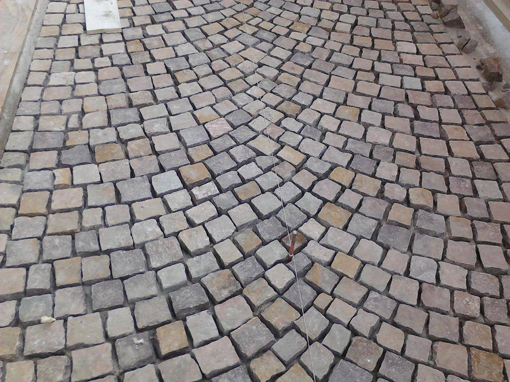
Porfido
Cubetti e lastre, anche posati ad archi contrastanti e a coda di pavone. Piazze, strade, parcheggi e marciapiedi.
Porfido, acciottolato, trachite e masselli. Cordoli, parcheggi, piste ciclabili e sottoservizi. Dal 1997 per Comuni, imprese e privati in tutto il Veneto e il Nord-Est.
Nella foto: porfido posato ad archi da Europosa.
In superficie si vede la pietra. Sotto c'è il lavoro che la tiene ferma negli anni. Noi facciamo tutte e due le cose, con squadre e mezzi nostri.

Cubetti e lastre, anche posati ad archi contrastanti e a coda di pavone. Piazze, strade, parcheggi e marciapiedi.
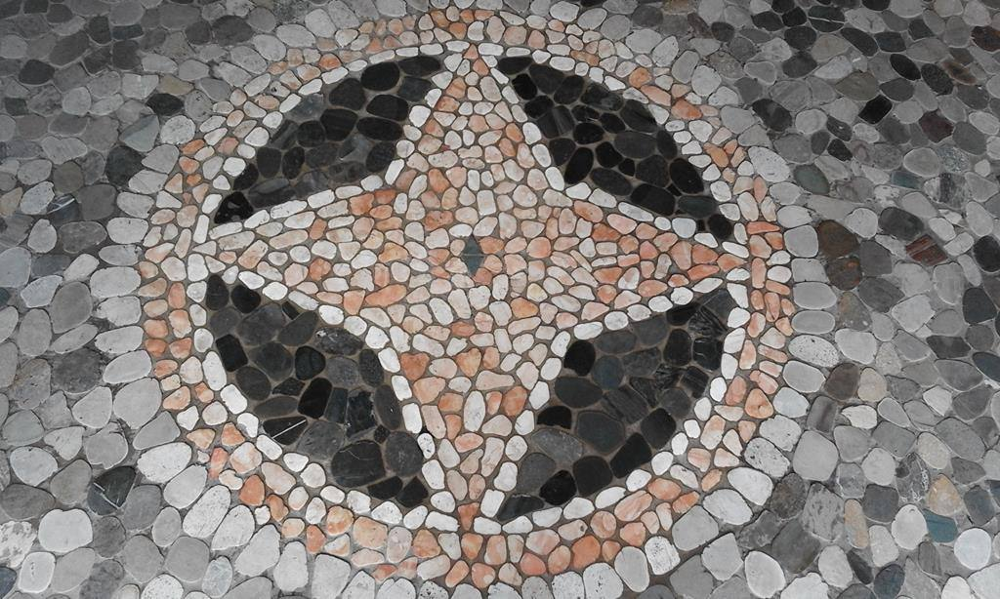
Ciottoli posati a mano, con rosoni, decori e scritte. Vialetti, sagrati e muri rivestiti.
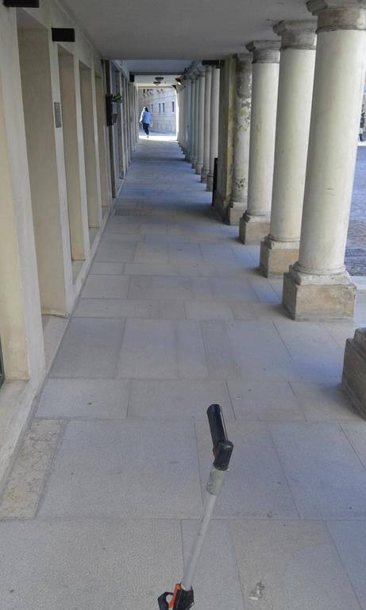
Lastre per centri storici, portici e piazze. Anche granito, marmo e pietra San Pietro.
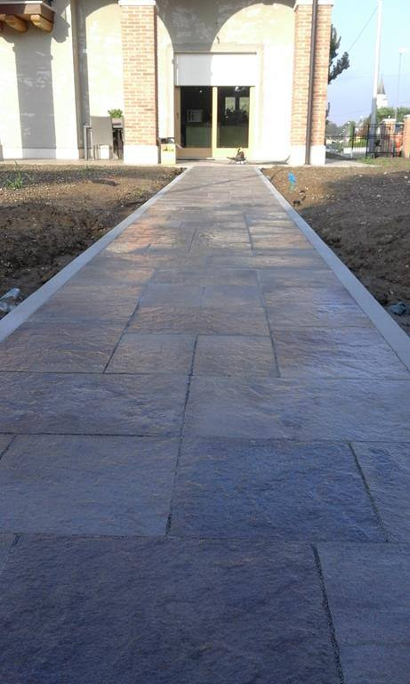
Vialetti, cortili e accessi carrai, con cordoli e caditoie già al loro posto.
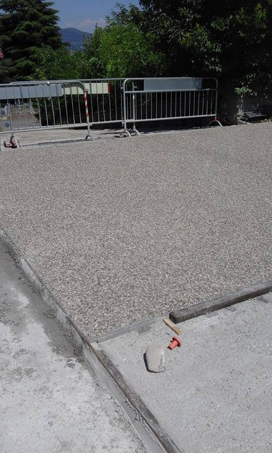
Superfici antiscivolo per piazzali, rampe, dossi e marciapiedi.
Lavori pubblici e privati con macchine operatrici nostre: scavi e movimento terra, sbancamento, rullatura e boiaccatura.
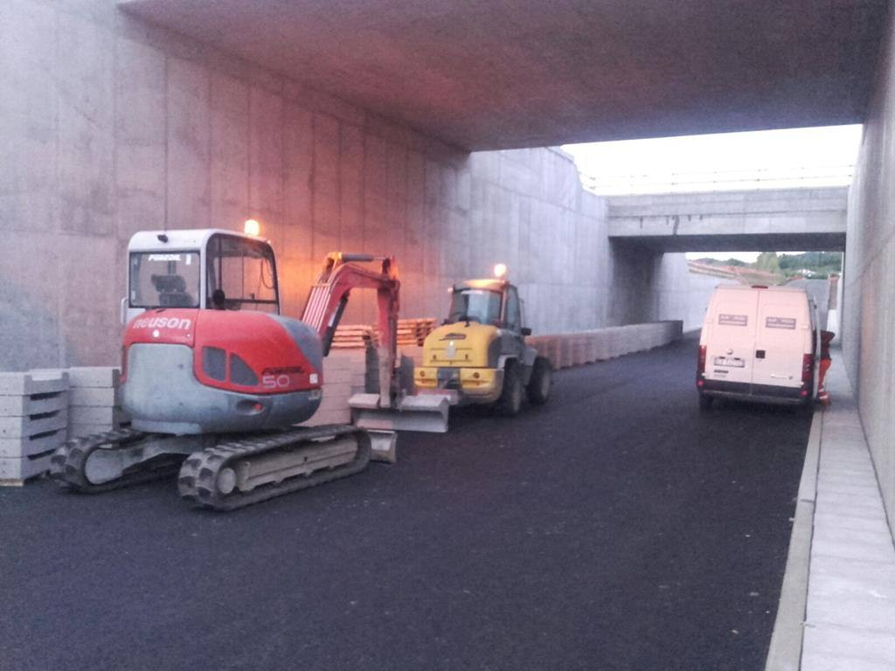
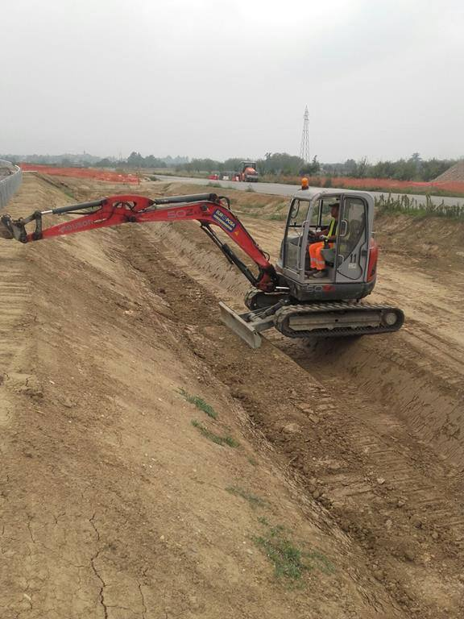
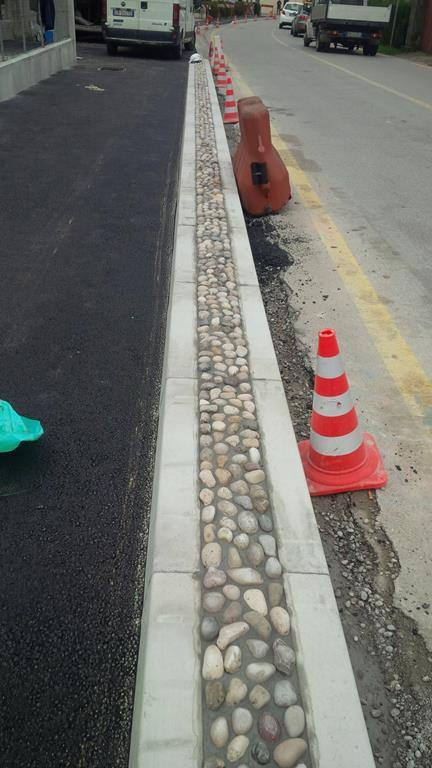
Una pavimentazione dura quanto quello che c'è sotto. Per questo seguiamo noi ogni fase, dallo scavo all'ultima fuga.
Scorri: la sezione si costruisce fase dopo fase.
Con escavatori e mezzi per il movimento terra prepariamo il terreno: scavi, sbancamento e quote di progetto.
Stendiamo il sottofondo e lo compattiamo con i rulli. È la parte che non si vede, ed è quella che evita avvallamenti e cedimenti.
Prima della superficie mettiamo al loro posto cordonate, caditoie, pozzetti e tubazioni. Così dopo non si rompe niente.
La pietra va giù un elemento alla volta, battuta e allineata. Poi la boiacca chiude le fughe e la pavimentazione diventa un corpo unico.
Velocità.
Puntualità.
Qualità.
I tre punti fermi di Europosa, dal 1997.
Centinaia di lavori in tutte le province del Veneto. Ecco alcune foto scattate da noi in cantiere: tocca una foto per ingrandirla.
Puliamo e proteggiamo pavimentazioni esistenti in pietra, cotto e cemento. Vialetti, cortili e piazze che sembravano da rifare.
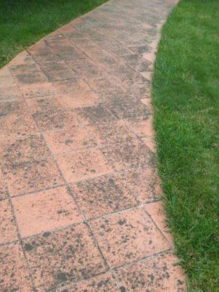
Prima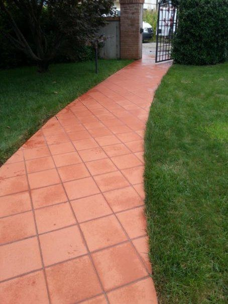
Dopo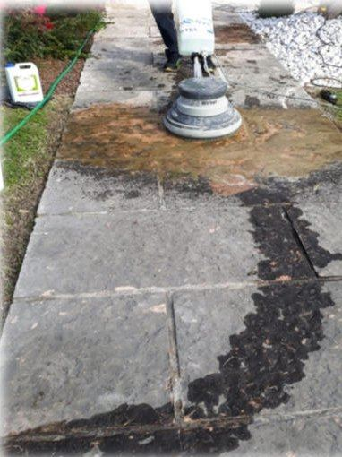
Durante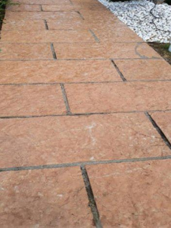
Dopo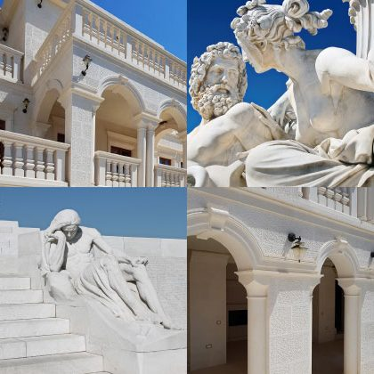
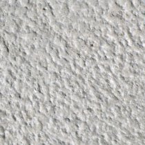
La pietra con cui sono stati costruiti la Casa Bianca, il parlamento austriaco e il monumento ai caduti di Vimy, in Francia.
Malleabile, poco assorbente, resistente al gelo e alla salsedine. Ha un aspetto luminoso e resta bianca nel tempo. Va bene per interni ed esterni, su tratti pedonali e carrabili.
Europosa nasce nel 1997 come ditta individuale di Aletic Nijaz, per tutti Nino. Partito da zero nella posa di pavimenti e nei lavori stradali, ha portato l'impresa dalla provincia di Treviso a tutto il Nord-Est.
Oggi Europosa S.r.l. ha un'organizzazione completa, dalla direzione tecnica al capo cantiere, con un'officina interna per i mezzi. Il modo di lavorare è rimasto quello: velocità, puntualità e qualità.
Attestazione SOA e presenza sul MEPA. Lavoriamo per Regione Veneto, Friuli Venezia Giulia, Trentino-Alto Adige, Comunità montane, Province, Comuni, enti e aziende municipalizzate.
Piazzali, parcheggi e pavimentazioni esterne industriali per aziende. Dal 2008 anche noleggio di macchine operatrici e trasporto conto terzi.
Vialetti, cortili, accessi carrai, muri e recinzioni. E la pulizia di pavimenti in pietra che hanno qualche anno di troppo.
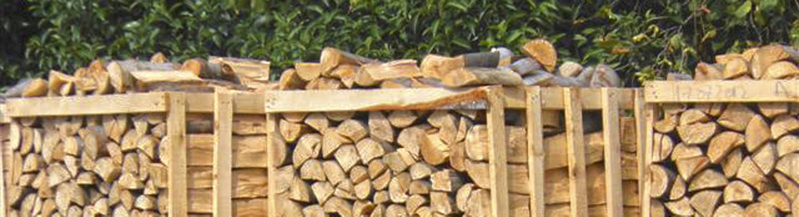
Con il marchio Globishcom forniamo pellet di abete e faggio, bricchetti di legno e legna da ardere.
Chiedi disponibilità e prezziChiama o scrivi: ti rispondiamo con un preventivo personalizzato.
0423 473252